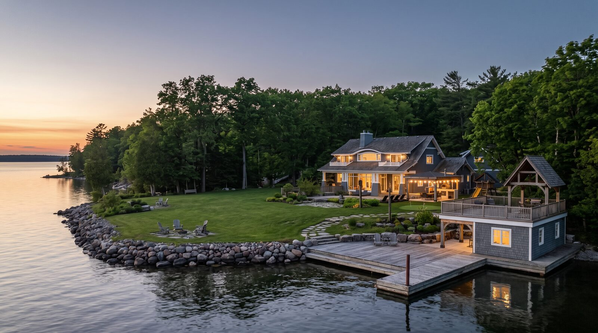
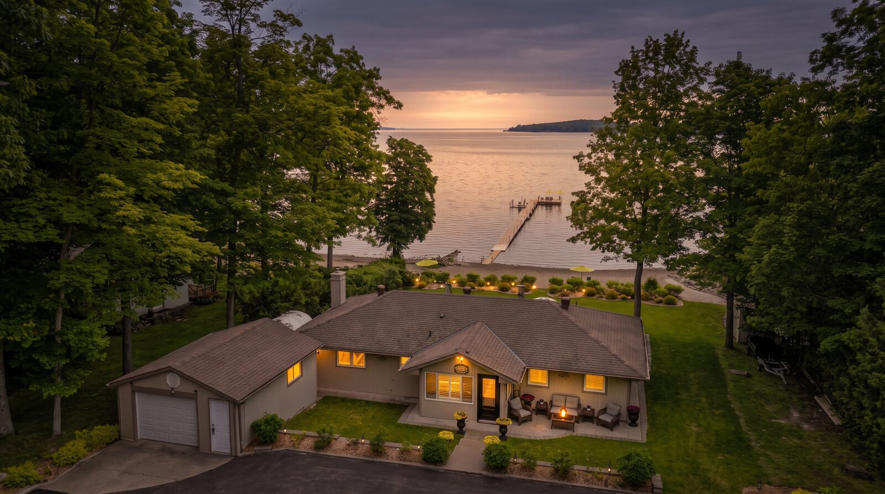
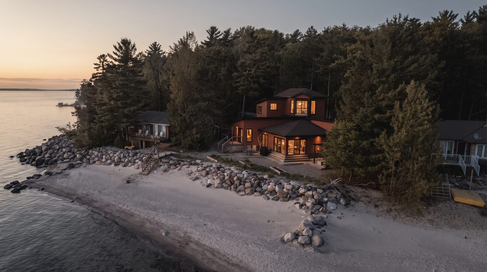
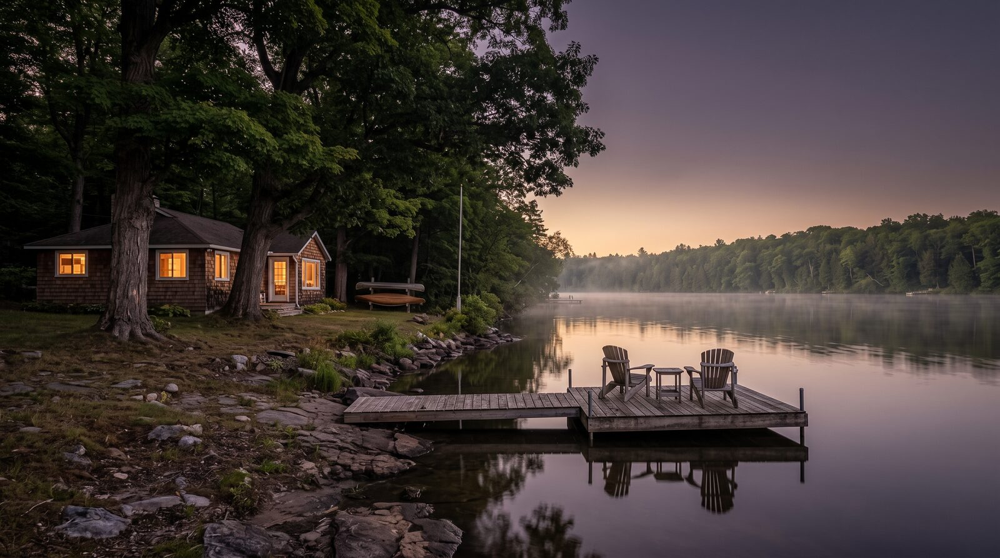
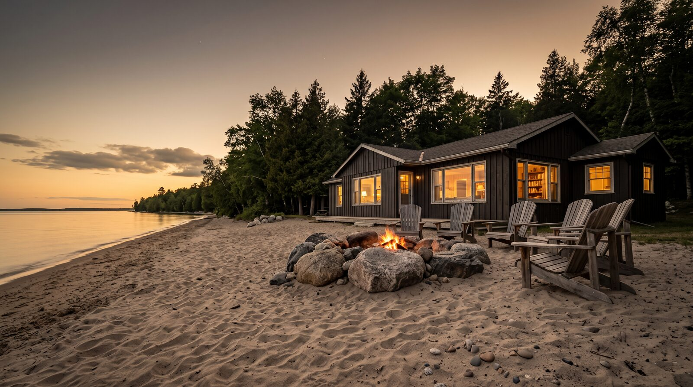

Waterfront guide

Waterfront in Tiny Township sells from roughly $750,000 on Farlain Lake to $4,500,000 and beyond at Thunder Beach in 2026, with new Silverbirch builds reaching $7,000,000 to $9,000,000. The pocket sets the price, not the township. Shoreline ownership, wells, and septic systems decide how smoothly that price is reached.
Key takeaways
- Tiny Township waterfront is 14 distinct pockets, not one market. 2026 waterfront values run from $750,000 at the Farlain Lake entry point to more than $10,000,000 for Westshore outliers.
- Thunder Beach is 4 markets inside one name: Silverbirch, East Beach, Centre Beach, and Westshore each carry their own price band.
- Shoreline ownership in Tiny Township takes 6 different forms, and the Goessman Reserves dispute, live as of August 2026, affects parts of Thunder Beach.
- Roughly 7 in 10 buyers come from the Greater Toronto Area and have never owned a well or a septic system. Preparation before the sign goes up prevents walked deals.
- Most shoreline owners are seasonal residents. Marketing a waterfront sale has to reach them, and the buyers, where they actually live: online.
One township, fourteen markets
Ask what waterfront is worth in Tiny Township and you have not yet asked a real question. A four season home on Centre Beach at Thunder Beach and a classic cottage on Farlain Lake can sit twenty minutes apart and three million dollars apart. The township is a line on a map. The pocket is the market.
That is not a slogan, it is the pricing reality. The geography does not even sort the way people assume. A reasonable guess would put everything on the open Georgian Bay shore above everything inland, but Farlain Lake's waterfront ceiling of $1,800,000 overlaps a large share of Champlain Road's $900,000 to $1,900,000 range. Which side of the township a property sits on matters less than which specific stretch of shore it sits on, what the shoreline ownership looks like, and what has been built or rebuilt around it.
So this guide does what a serious seller conversation does. It goes pocket by pocket.
The pocket price map, August 2026
These ranges reflect Jonathan Wallace's read of each pocket as of August 2026. They describe where each market lives, not what any specific property is worth. A real number for a real address comes from a proper evaluation.
| Non-waterfront | Waterfront | |
|---|---|---|
| Champlain Road | $450K to $950K | $900K to $1.9M |
| Thunder Beach, Silverbirch | $500K to $800K | $1M to $3.2M (new builds $7M to $9M) |
| Thunder Beach, East Beach | $500K to $800K | $1M to $1.4M |
| Thunder Beach, Centre Beach | $500K to $900K | $1.3M to $4.5M |
| Thunder Beach, Westshore | Not applicable | $1.6M to $3.7M (outliers $10M+) |
| Cedar Point / Melissa Lane | $550K to $800K | $2M to $3.5M |
| Farlain Lake | $500K to $850K | $750K to $1.8M |
| Balm Beach | $500K to $1.1M | $1.3M to $2.5M |
| Woodland Beach | $450K to $1M | $1.4M to $3M |
| Wymbolwood Beach | $450K to $1M | $1.4M to $3M |
| Bluewater Beach | $450K to $1M | $1.4M to $3M |
| Deanlea Beach | $450K to $1M | $1.4M to $3M |
| Edmore Beach | $450K to $1M | $1.4M to $3M |
| Lafontaine | $450K to $650K cottage, $650K to $1.1M newer builds | $1.2M to $2M |
Ranges are market knowledge as of August 2026, not a valuation of any specific property.
Three things stand out in that table.
First, Thunder Beach is not one number. Silverbirch new construction at $7,000,000 to $9,000,000 and East Beach at $1,000,000 to $1,400,000 share a community name and almost nothing else. An agent who prices "Thunder Beach" instead of pricing the specific beach is guessing.
Second, the southern beaches (Woodland, Wymbolwood, Bluewater, Deanlea, Edmore) move as a band, $1,400,000 to $3,000,000 on the water. Within that band, the differences are lot by lot: shoreline ownership, dune position, rebuild quality, and the road between the cottage and the sand.
Third, Farlain Lake is the accessible entry to Tiny waterfront at $750,000, and it climbs to $1,800,000. An inland lake bordering Awenda Provincial Park is its own market with its own buyer, not a discount version of the Georgian Bay shore.

The pockets, and where they came from
Every one of these communities has a founding story, and the stories still shape the lots, the roads, and the deeds. Sellers should know them because buyers increasingly do.
Champlain Road. The oldest name on this shoreline belongs to Samuel de Champlain, who explored it in 1615 and 1616. Toanche, a Huron-Wendat village believed to be where he wintered, stood nearby. Today the corridor runs from original cottages to substantial four season waterfront, $900,000 to $1,900,000 on the water, with the open bay in front and four hundred years of history behind.
Thunder Beach. The land here traces to Crown Patents issued in 1823 to John Goessman, the deputy surveyor who mapped Tiny Township. That 1823 paperwork is not trivia. It is the root of a live legal question covered in the next section. The four sections, Silverbirch, East Beach, Centre Beach, and Westshore, each developed their own character and their own market, from $1,000,000 cottages to new builds approaching $9,000,000 and Westshore outliers past $10,000,000.
Cedar Point and Melissa Lane. Known as Pt. Etondatrateus in the 1600s and marked Glover Point on an 1864 British Admiralty chart, with an 1899 archaeological survey identifying a possible Huron village site. The modern beach community dates to 1936, when Tom and Jean Lynn subdivided it. Their store and ice house still stand. On the water today: $2,000,000 to $3,500,000.

Farlain Lake. A glacial finger lake beside Awenda Provincial Park, originally three farms: the Quesnelle farm and two Cook family holdings, which is why locals still call it Cook's Lake. Cottage lots began severing off in the 1920s, and the north Cook farm became the 90 lot Wildwood Estates after a 1969 sale. Waterfront runs $750,000 to $1,800,000.
Balm Beach. Robert Finley of Barrie bought the land around 1920 and subdivided it in 1922. His surveyor, Ardagh, bought the adjoining land to the north, and Ardmore Beach carries both names to this day, Ardagh plus Moreau, the vendor. Balm Beach is the commercial heart of the west shore, and its waterfront runs $1,300,000 to $2,500,000.
Woodland Beach. Subdivided in 1921, and the only Tiny beach with its own published history, Footprints in the Sand: Woodland Beach Memories, produced after a 2014 community history day drew roughly 400 people. That is what these communities are: places people write books about.
Wymbolwood Beach. Subdivided in 1927. The Wymbolwood and Mountainview Beaches Association formed on August 3, 1947, and the community weathered Hurricane Hazel in 1954.
Bluewater Beach. Subdivided in 1926, part of the same between-the-wars cottage wave as its neighbours.
Deanlea Beach. Named for farmer John Dean and developed from the Depression years by George Richardson and Mary Madill, surveyed in 1933. Richardson curved the roads around trees rather than following the survey line, which is why some Deanlea lot lines still look the way they do, and he guaranteed every cottager access to the beach. When a buyer's lawyer asks about an odd boundary in Deanlea, the answer is often a ninety year old tree.
Edmore Beach. Founded in 1947, part of the postwar wave that also produced Georgina and Wendake in 1946 and Belle-Eau-Claire in 1949.
Lafontaine. Originally Sainte-Croix, renamed for Louis-Hippolyte Lafontaine, and the heart of the township's French Canadian heritage, celebrated every year at Le Festival du Loup, which marks the 19th century wolf legend tied to the Théophile Brunelle homestead. Lafontaine offers the township's widest spread: village cottages from $450,000, newer builds to $1,100,000, and waterfront at $1,200,000 to $2,000,000.

Who owns the beach: six answers, and one live dispute
The single most consequential question in a Tiny Township waterfront sale is one many owners have never been asked directly: does this property own down to the water?
The Township of Tiny itself lists 6 possible ownership scenarios for the land between a waterfront lot and the water: First Nation, Provincial, Township, Communal, Individual, and Unknown. Six. On one shoreline. The township has litigated beach ownership for years, including a multi-year fight over Plan 779 and a Court of Appeal decision covering Block B of Plan 656 and Woodland Beach. This is not a theoretical issue that lawyers invented. It is the recurring story of this shore.
The current chapter is the Goessman Reserves.
When John Goessman surveyed Tiny Township, the 1823 Crown Patents reserved a shore road allowance one chain wide, 66 feet, along the shoreline of eight original lots, a significant portion of it within Thunder Beach. For generations the reserve sat dormant. In 2002, council considered claiming it and rejected the idea unanimously as an administrative nightmare, since two hundred years of shoreline change had made its exact location uncertain. In 2025 the question returned: a CAO report, CAO-004-25, recommended formal acceptance under the Municipal Act, and on August 6, 2025, council voted 4 to 1 to proceed under by-law 25-045.
Affected property owners, organized as the Goessman Reserve Working Committee, argue the reserve's location is unknowable after two centuries, that acceptance threatens established private ownership and property values, and that the decision moved forward without meaningful consultation. They have retained legal and survey counsel and are pursuing a court challenge. The Township's stated position is that formal acceptance clarifies jurisdiction and supports resolving access and boundary disputes. As of August 2026, the matter is unresolved.
What does this mean for a seller? Not panic, preparation. A buyer's lawyer in a Thunder Beach transaction will ask about the Goessman Reserves, and the selling side should have the answer ready: what the survey shows, what the title says, and which of the six ownership scenarios applies to this specific stretch of shore. The question "do I own to the water's edge, or does township land sit between my lot and the bay" is answerable only by address, never by pocket. A seller who walks into the market with that answer documented is selling certainty. A seller without it is inviting a price renegotiation in week three.
The full ownership picture, including riparian rights and how the shore road allowance works across the township, is covered in the companion guide, Who Owns the Beach in Tiny Township?
Wells, septic systems, and the buyer from the city
Roughly 7 in 10 buyers for Tiny Township waterfront come from the Greater Toronto Area, and most have never owned a well or a septic system. Every unanswered question about either one is a chance for that buyer to walk.
Sixteen small municipal water systems cover specific named subdivisions in Tiny, including parts of Lafontaine, Perkinsfield, Wyevale, and the Balm Beach area. Outside those systems, properties run on private wells and septic. The seller's move is to close every question before the first showing:
- Septic pumped and inspected, with the report in hand, before the sign goes up.
- Water test completed, with a result of 0.0, before the sign goes up.
- Survey located, and the shoreline ownership question answered in writing.
- For the beach communities, confirmation of which water system, if any, serves the property.
None of this is expensive relative to a seven figure sale. All of it converts the most common deal-killing questions into one page of documentation.

Selling to a market that is not home
Here is the structural fact about the Tiny shoreline that changes how a sale is marketed: the majority of waterfront owners are seasonal. Of roughly 9,699 private dwellings in the township, about 4,265 are seasonal. The owners are in Toronto, Mississauga, Oakville. So are the buyers.
A mailbox flyer in Tiny reaches an empty cottage in February. The market for these properties lives online, in search, and increasingly in AI powered answers to questions like "what is my cottage in Tiny Township worth." Marketing a waterfront sale here means professional photography and video, a 3D walkthrough, geo-targeted digital campaigns aimed at the GTA, and listing content that answers the well, septic, and shoreline questions before they are asked, because the buyer researching from a Toronto condo cannot drive by to check.
Jonathan Wallace lives in Tiny Township, has helped hundreds of families across 7.5 years, has sold more than $300,000,000 in career volume, and holds a 4.96 rating across 15 verified reviews on RateMyAgent, ranked first in Midland and Penetanguishene. The pocket knowledge in this guide is what a listing presentation at this tier is built on: not township averages, but the band, the shore, and the history of the specific street.
Frequently asked questions
What is my waterfront cottage in Tiny Township worth in 2026?
Waterfront in Tiny Township ranges from roughly $750,000 on Farlain Lake to $4,500,000 at Centre Beach, Thunder Beach, in 2026, with Silverbirch new builds reaching $7,000,000 to $9,000,000 and Westshore outliers above $10,000,000. The pocket, the shoreline ownership, and the build quality set the number. A specific value requires a property evaluation.
What should I know before selling a house in Thunder Beach?
Thunder Beach in Tiny Township is four separate markets in 2026: Silverbirch ($1,000,000 to $3,200,000 waterfront, new builds to $9,000,000), East Beach ($1,000,000 to $1,400,000), Centre Beach ($1,300,000 to $4,500,000), and Westshore ($1,600,000 to $3,700,000, outliers past $10,000,000). Sellers should also resolve the Goessman Reserves shoreline question for their lot before listing, since the 1823 shore road allowance dispute remains unresolved as of August 2026.
What is a cottage in Deanlea Beach worth?
In 2026, waterfront in Deanlea Beach, Tiny Township, generally sells between $1,400,000 and $3,000,000, with non-waterfront homes between $450,000 and $1,000,000. Deanlea's 1933 survey curved roads around trees, so lot lines can be irregular; an up to date survey is worth ordering before listing.
Do waterfront properties in Tiny Township own down to the water?
Some do, many do not. The Township of Tiny recognizes 6 shoreline ownership scenarios: First Nation, Provincial, Township, Communal, Individual, and Unknown. Parts of Thunder Beach are also affected by the Goessman Reserves, a 66 foot shore road allowance from 1823 Crown Patents that council voted to formally accept in August 2025 and that property owners are challenging in court as of August 2026. The answer is specific to each address and comes from the survey and title, not from the pocket.
Can I sell vacant land in Tiny Township?
Yes. Vacant land in Tiny Township sells in 2026, from building lots in the beach communities to acreage on the inland concessions. Land sales carry their own questions: development potential, access, whether municipal water reaches the lot, and shoreline ownership for waterfront parcels. Pricing depends heavily on the pocket and on what can be built.
Who should sell a waterfront cottage on Farlain Lake?
An agent selling on Farlain Lake in Tiny Township should know the lake's market specifically: waterfront there runs $750,000 to $1,800,000 in 2026, distinct from the Georgian Bay shore, with its own history as a former farm lake beside Awenda Provincial Park. Ask any agent for their record on the lake itself, their process for well and septic preparation, and how they market to the Greater Toronto Area buyers who drive this market. Jonathan Wallace lives in Tiny Township and works this shoreline pocket by pocket.
Thinking about selling on the Tiny shoreline?
Every pocket in this guide gets a real number the same way: a walk through the property, the survey, the shoreline documentation, and the comparable sales for that specific stretch of shore. If a sale is on your mind for this year or next, start with an honest evaluation. Message Jonathan Wallace or request a home valuation, and the conversation starts with your pocket, not the township average.
By Jonathan Wallace, REALTOR®, Faris Team Real Estate, Brokerage. 705-433-2525.
This article is general information about real estate in Tiny Township, Ontario, and is not legal advice. Shoreline ownership, road allowances, and title questions must be verified for a specific property with a real estate lawyer and an up to date survey. Price ranges reflect market knowledge as of August 2026 and are not a valuation of any specific property.
Keep reading: Who Owns the Beach in Tiny Township? · Buying Waterfront on Georgian Bay · What Is My Home Worth?